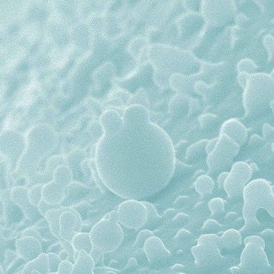
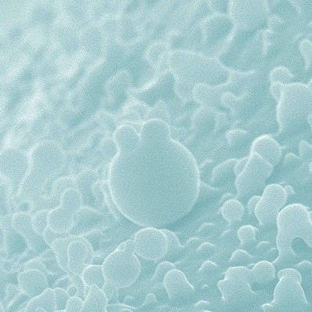

Rosalind Franklin
Imagen editada (original)
Propiedad de Jenifer Glynn.
Creative Commons (CC BY-SA 4.0)
Barbara McClintock
Imagen editada (original)
Propiedad del Instituto Smithsoniano.
Dominio público (Licensing)
Marie Curie
Imagen editada (original)
Propiedad de Henri Manuel.
Dominio público (Licensing)
Lise Meitner
Imagen editada (original)
Propiedad del Instituto Smithsoniano.
No restrictions (Copyrights)
Vista panorámica de la Vía Láctea
Imagen editada (original)
Propiedad de Serge Brunier.
Creative Commons (CC BY 4.0)
Fragmentación de partículas de selenio
Imagen editada (original)
Propiedad de Muderkind.
Creative Commons (CC BY 4.0)
Lámpara de plasma
Video editado (original)
Propiedad de Colin.
Creative Commons (CC BY-SA 3.0)